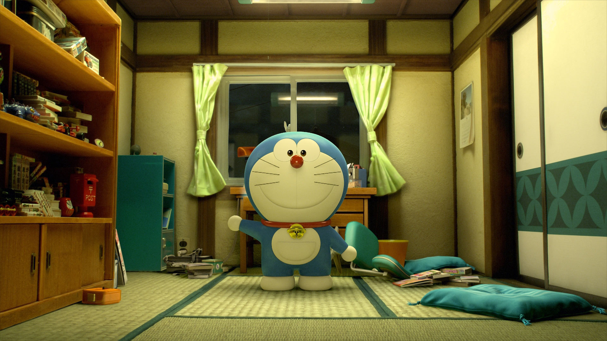

demo2
第一篇文章
传统的集成电路建立在硅材料基础之上，由于晶体管的尺寸越来越小，功耗、量子隧穿等现象对晶体管的影响尤为突出。在后摩尔时代，寻找非硅基材料的元器件，成为一个热门的研究方向。随着石墨烯的出现，越来越多的二维材料被成功的制备。二维材料具有优异的电子结构，高迁移率和高导热系数等优点，受到广泛的研究和关注，有望替代硅成为集成电路的原材料。并且大量的研究在理论和实验上已经证明了很多二维材料为拓扑绝缘体[6,13,21–27]。拓扑绝缘体是一种全新的量子材料，其和普通的绝缘体一样，具有绝缘的体态，但是在表面或者界面处具有无耗散的导电边缘态或表面态[6,13,14,21–30]。拓扑绝缘体的出现，有望解决晶体管集成度过高所带来的高功耗问题。本章从二维材料及其纳米结构开始介绍，然后介绍霍尔效应家庭、二维拓扑绝缘体、三维拓扑绝缘体以及高阶拓扑绝缘体，最后介绍一维石墨烯纳米带的拓扑态和拓扑分类。
第二个标题
体结构使得其在力、热、光、电等物理领域有着独特的应用前景[1]。从上个世纪开始，二维材料一直是作为一种理论模型来研究，因为根据热力学理论，二维材料不具有热力学稳定性[31,32]。自从实验上成功剥离出第一个二维材料——石墨烯[33]，这激发了学界对于二维材料的广泛研究。在理论和实验上已经预言和制备出了成百上千种二维材料，例如石墨烯、过渡金属硫化物、六方氮化硼、黑磷和有机二维材料等[1,34,35]。除此之外，我们可以通过层间范德华力将多层二维材料像搭积木一样堆垛起来，形成满足特定需求的超晶格结构，如范德华异质结、多层石墨烯和转角石墨烯等[36–38]。目前实验上合成二维材料的方法一般是通过机械剥离的方式，从相应的体材料中剥离出对应的二维材料[34]。由于量子限制效应的影响，二维材料和相应的体材料有着不同的物理性质，其中最重要的一点就是带隙。对于大部分的体材料而言，带隙是小于单层材料的，并且随着层数的减少，带隙越来越大，甚至会出现从间接带隙变化为直接带隙的情况[39]。二维材料种类繁多，包括从半金属到绝缘体的单质和化合物，其能隙可以覆盖整个电磁谱，在各种领域都有着潜在应用！

import numpy as np |